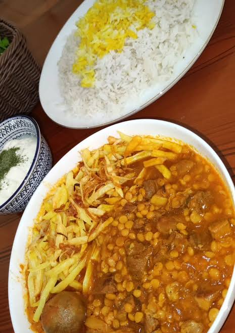
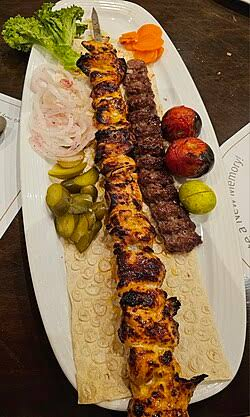
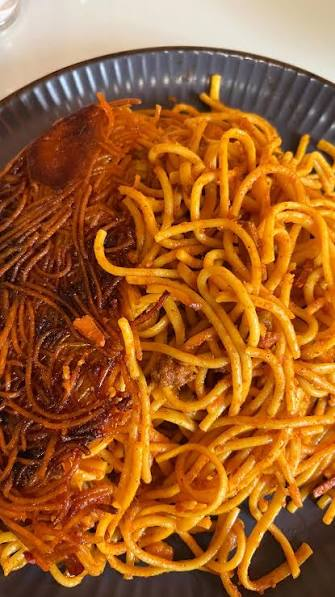

من عرفان سالکی هستم ، 34 ساله ، کارشناس ارشد مهندسی فناوری اطلاعات که درحال حاضر دانشجوی دوره Junior FrontEnd Developer در آموزشگاه کدینگ فرانت هستم زیر نظر جاوید عزیز که مجبورمون کرده از واژه استاد استفاده نکنیم.

خورشت قِیمه یا خورشت لپه از غذاهای آشپزی ایرانی است. این خورش در میان ایرانی ها و عراقیها غذایی پرطرفدار است و برای پخت آن از پیاز سرخ شده، رب گوجه فرنگی، لپه، گوشت قرمز، سیب زمینی سرخ شده به همراه لیموی خشک (لیمو عمانی) به عنوان طعمدهنده استفاده میشود. ادویهای که معمولاً در اواخر زمان طبخ به آن اضافه میشود دارچین است، برای دادن عطر ویژه به آن مقداری هل و گلاب میتوان اضافه کرد. این خورش به همراه چلو سرو میشود.

چلوکباب یکی از اصیلترین و از معروفترین غذاهای ایرانی است. این خوراک متشکل از چلو کره و کباب است که با سماق و گوجه و برنج و کره یا نان مصرف میشود. «به روایت جعفر شهری در کتاب طهران قدیم، نخستین چلوکبابیهای تهران در دوره ناصرالدینشاه قاجار و در حدود سال ۱۲۵۴ خورشیدی (۱۸۷۵ میلادی) در بازار تهران آغاز به کار کردند که در میان آنها چلوکبابی نایب از پیشگامان این صنف بود

ماکارونی یکی از گونههای پاستا است. این ماده خوراکی بیشتر در کارخانجات به صورت خشک تولید شده و پیش از خوردن جوشانده میشود. معنا و شکل ماکارونی در هر کشور یا منطقه تفاوت دارد. در ژاپن بیشتر به گونهای پاستا گفته میشود که شکل ظاهری آن به صورت میلهای کوتاه سوراخدار یا به شکل صدف یا طرحهای گوناگون دیگر است. در ایتالیا ماکارونی اشاره به نوعی پاستا به شکل میلهای سوراخدار کوتاه است. به زبان انگلیسی، ماکارونی به معنای نوعی پاستای میله مانند کوتاه و سوراخ دار است، اما در بین ایتالیایی– آمریکاییها در سراسر فیلادلفیا و نیویورک، ماکارونی واژهای است که به همه گونههای «پاستا» اشاره دارد
| نام غذا | مواد تشکیل دهنده | کالری به ازای 100 گرم |
|---|---|---|
| خورش قیمه | پیاز سرخ شده، رب گوجه فرنگی، لپه، گوشت قرمز، سیب زمینی سرخ شده | 198Cal |
| چلوکباب | گوشت مخلوط،پیاز،دنبه،نمک،فلفل سیاه،زعفران دمکرده | 300Cal |
| ماکارونی | ماکارونی بسته بندی،گوشت چرخ کرده و... | 371KCal |